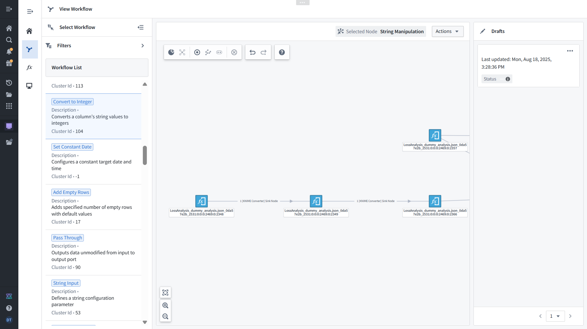
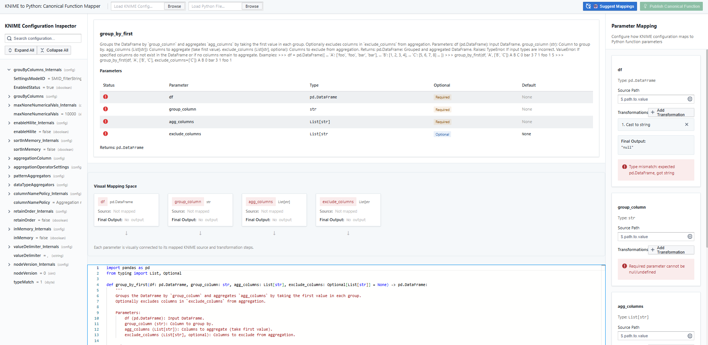
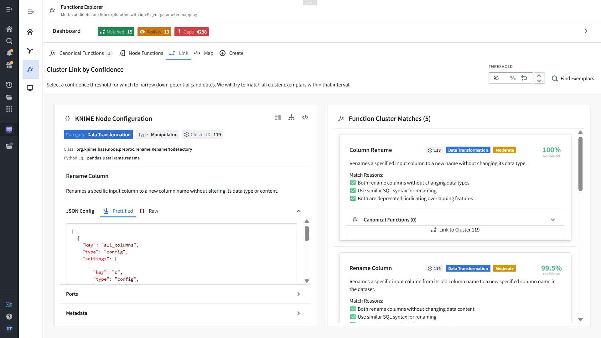

KNIME to Python
Upcoming Platform Enhancements
Node Explorer
Interactive Workflow Visualization
Node Explorer Screenshot
Please save the View Workflow screenshot as imgs/node_explorer_screenshot.png
'">
Visual workflow navigation
with interactive graph rendering of KNIME nodes and data flow connections.
→
Pan, zoom, and rearrange workflow layouts
→
Select nodes for detailed inspection and conversion
→
Trace data lineage with parent/child relationships
Variable Mapper
Configuration Translation Interface
Variable Mapper Screenshot
Please save the Functions Explorer screenshot as imgs/variable_mapper_screenshot.png
'">
Bridges KNIME settings to Python parameters
through explicit user-verified mapping for accurate code generation.
→
Dual interface showing JSON config and function parameters
→
Manual linking via connections or dropdown selection
→
Generates accurate Python code with verified mappings
Cluster Link
AI-Powered Function Curation
Cluster Link Screenshot
Using existing cluster_link_sc.png or save new screenshot
'">
Intelligent clustering management
using cosine similarity and AI-generated rationale for function library optimization.
→
Similarity analysis with confidence scoring (99.5%+)
→
LLM-generated matching rationale and explanations
→
Human expert curation for semantic integrity